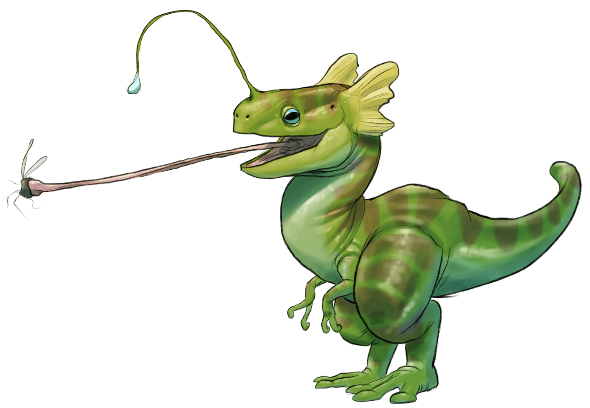
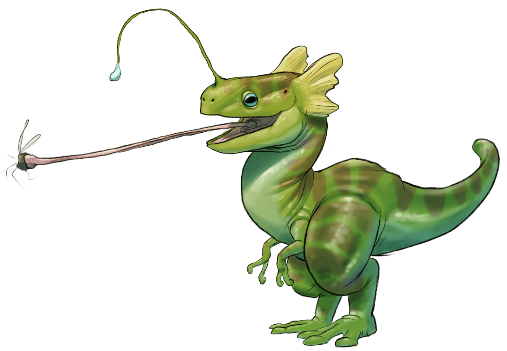

Welcome to the collabritive home for unfinished faces.
Here you can find the starts of many new inspirations.
Each contributing artist has shared their orignial material in the hopes of giving life to the
projects they have yet to finish.

We offer a variety of bases that include but are not limited too...
| Female | Male | Other |
| Faces | Bodies | Appendages |
| Line Drawn | Digital | Mixed Media |
| Beginner | Intermediate | Advanced |
The projects you will find here are the efforts of those who love them.
Each stroke and line was put forth with the intention of creating something to impact the world.
We all want to share with others that which inspires us, and here no matter how far we are able to bring
that to life there is the opportuinty to let others take it further.
Together we are able learn and grow, standing on the foundations others help us build.
- Sketch
- Digital Media
- Mixed Media
- Finished
~Gallery~

 
